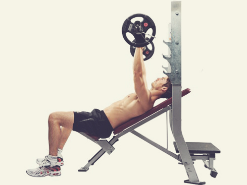

벤치 프레스
Bench Press
목차
1. 개요
웨이트 트레이닝을 대표하는 3대 운동을 들자면 스쿼트, 데드리프트, 벤치 프레스가 있다.
그 중에서 벤치프레스는 근력운동을 해본 적 없는 사람들도 알고 있는 가장 대표적인 운동으로, 가슴 위의 상체를 종합적으로 강화시키는 효과를 준다.
2. 특징
웨이트 3대 운동답게 효과가 매우 뛰어나다. 거대한 가슴 근육 발달에는 벤치 프레스만한 운동이 없으며 가슴뿐만 아니라 어깨, 삼두 등 상체근육 전반을 그 어떤 운동보다도 고중량으로 소화해낼 수 있는 상체 운동의 최고봉인 운동이다.
흔히 바벨과 덤벨을 사용하여 운동한다. 그 중에서도 바벨 벤치 프레스는 가장 많은 무게를 사용할 수 있는 고중량 상체 운동이기 때문에 대흉근의 매스 발달에 더 유리하다. 그 때문에 헬스장에 들어서면 가장 흔히 볼 수 있는 광경이 갑빠 키우고 싶은 수많은 사람들이 벤치에 누워 바벨과 씨름하는 모습일 정도. 하지만 바벨 벤치 프레스는 그만큼 오·남용이 심해서(…) 위험성 때문에 헬스 경력자들은 초심자에게 여간해선 권하지 않고, 그 대신 팔굽혀펴기를 먼저 마스터 할 것을 권유한다. 하지만 초심자는 벤치부터 하겠다고 덤빈다. 사실 3대운동 중에선 가장 편해서 그렇다. 누워서 하니까 편해"보이긴" 하겠지.
그러나 바벨 벤치 프레스는 양손이 바벨에 고정되기 때문에 덤벨 벤치 프레스와 비교했을때 가동성이 많이 떨어진다. 그에 반해 덤벨 벤치 프레스는 비록 바벨만큼 고중량을 들기에는 어렵지만 범용성이라는 큰 장점이 있다. 양손의 가동이 자유로운만큼 운동 반경이나 손의 회전 등 운동 동작의 변형을 통해 좀 더 다양한 자극을 줄 수도 있고, 또 자신의 신체에 좀 더 적합한 동작으로 운동을 수행해낼 수도 있다. 아무리 가동범위를 전부 살린다고 해도 한계가 있는 벤치프레스에 비해, 가동범위가 매우 넓어서 가슴을 입체적으로 만들기에 더 좋다. 이러한 장점은 어깨 부상이 있어 바벨 벤치가 불편한 사람들에게는 큰 도움이 된다. 특히 모든 바벨 운동 상대 덤벨 운동들이 그러하듯 근육과 근력의 좌우 불균형을 갖고 있는 사람들은 이 덤벨 프레스를 통해 교정이 가능하다.
결론은 고중량 자극을 통해 벌크 업(bulk up)에 유리한 바벨과 범용성이 좋은 덤벨을 병행해 주면 더 크고 균형있는 대흉근을 키우는데 도움이 된다. 덤벨 플라이 등 다양한 자극을 줄 수 있는 운동을 곁들이면 금상첨화.
3. 종류
벤치 프레스는 크게 세 종류로 나뉜다.
3.1. 플랫 벤치 프레스(Flat Bench Press)

글자 그대로 평평한 벤치에 누워서 한다. 보통 벤치 프레스라고 하면 이것을 가리킨다. 사진은 바벨 벤치 프레스.
운동법은 우선 바벨 프레스의 경우, 먼저 바벨이 머리보다 살짝 위에 오도록 누운 뒤 등을 벤치에서 띄워 가슴의 경사가 배로 내려갈수록 올라가게 만든다. 이렇게 하면 가슴을 자랑하듯 위로 내민 상태가 될 것이다. 그 다음 발을 엉덩이를 들어올리지 않을 만큼 뒤로 위치시켜 엉덩이와 함께 상체의 자세를 지탱해준다. 이렇게 하는 이유는 우선 이 자세에서 바벨을 들면 가슴과 팔이 90도보다 작은 각도를 이루게 되는데, 이 자세가 신체 구조상 상체가 누운 상태에서 무게를 들어올리는데 훨씬 더 자연스러운 자세이기 때문이다. 반대로 등이 벤치에 딱 붙은 일직선인 상태로 팔과 가슴이 90도 각에서 무게를 들어올린다면 회전근개 다치기 십상이다. 벤치 프레스할 때 흔한 잘못된 자세이므로 주의하자.
운동 동작은 바(bar)가 젖꼭지 근처에 살짝 내려앉은 뒤 위로 비스듬하게 밀어 올려야 한다. 바를 잡는 그립의 너비 또한 중요한데, 어깨 넓이만큼 양 손을 벌려 잡는 것이 정석이다.
여기서 어깨 넓이보다 넓게 잡는 와이드 그립(wide grip)의 경우, 운동 반경이 짧아지기 때문에 더 많은 무게를 들 수는 있지만 지나치게 넓은 그립은 대흉근 파열의 위험이 높아지기 때문에 추천하지 않는다.
어깨 넓이보다 좁게 잡으면 대흉근이 보조근으로 작용하고 삼두근의 개입이 더 이뤄지기 때문에 대체로 삼두 운동에 사용된다. 이쪽은 '클로즈 그립 벤치프레스'라고 한다. 이건 내려올때 팔꿈치를 몸에 가깝게 붙인다.
바를 들어올릴때 팔꿈치가 완전히 펴지는가 아닌가도 중요하다. 팔꿈치를 완전히 편다면 횟수 사이에 잠깐씩 휴식이 이뤄지기 때문에 고중량 세트에 좋으며, 전면 삼각근과 삼두근의 개입이 많다. 가슴에 지속적인 부하(constant tension)는 끊어지게 된다. 엘리트 보디빌더들은 극단적으로 짧은 운동 반경을 통해 다른 근육 부위의 개입을 완전히 차단하기도 한다.
덤벨 프레스는 준비 자세는 바벨 프레스와 자세는 크게 다르지 않다. 다만 고중량 덤벨을 사용할 때, 땅에서부터 들어올려 준비 자세로 가져가는 것이 어려운데, 이런 식으로 무릎의 도움을 받는 방법도 있다.
또한 양 손이 자유로운만큼 운동 동작에 좀 더 신경써줘야 하는데, 우선 팔꿈치를 벌어지지 않게 모아주면 삼각근보다 대흉근으로 자극이 집중된다. 양팔이 벌어질 경우 삼각근을 발달시킬 수 있지만 어깨에 무리가 가지 않게 조심해야 한다. 좁을 경우는 삼두근과 가슴 안쪽에 자극을 줄 수 있다. 그 외 양손이 완전하게 수직이냐 어느 정도 마주보느냐의 각도도 중요한데, 덤벨 프레스의 장점인 만큼 자신의 신체가 가장 편하게 느끼는대로 잡도록 하자.
벤치 프레스가 상체 운동이긴 하지만 양발이 몸을 지탱해주는 하체의 사용 또한 매우 중요한 운동이다. 만약 하체가 제대로 상체를 지탱해주지 못하면 힘이 새면서 중량을 치기가 힘들게 된다. 또한 땅을 힘껏 밟는다는 느낌으로 발로부터 힘을 끌어올리는 렉 드라이브(Leg Drive)라는 테크닉이 있는데, 파워 리프터들에게는 필수일 만큼 고중량을 들어올릴때 중요한 요소이다. 첨부된 사진 속 빨간 화살표가 렉 드라이브의 힘 전달 방향을 표현한 것이다.
바벨 프레스는 덤벨 프레스와 달리 세트 도중 한계가 오게 되면 봉을 못들어올리고 밑에 깔려버리게 되는 불상사가 생길 수도 있다. 이 때문에 초고중량을 들 때는 반드시 주변 사람에게 벤치 뒤에서 세트를 지켜봐달라고 부탁하도록 하자.그리고 보는 눈이 생겨서 힘이 더 세진다. 보조자가 없는 조건이라면 파워랙이 있는 헬스장에서 운동하는 것도 한 방법이 된다.
플랫 벤치 프레스는 상술한 바와 같이 부상의 위험이 매우 높은 운동이기 때문에 모든 운동이 다 그렇지만 정확한 폼을 익히는 것이 매우 중요하다. 사람마다 기본적으로 체형이 달라서 교과서적으로 동작이 같아질 수 없다. 예시로 팔 길이가 벤치프레스 자세에 상당히 영향을 많이 끼치는데, 팔이 긴 사람들은 교과서적인 방식대로 한다면 더 많이 내려야 하기 때문에 운동에 더 힘도 많이 들고 부상의 위험도 높아진다. 따라서 꼭 읽는 것 이상으로 전문가에게서 직접 자세를 보고 해보면서 배우고, 배우고 난 뒤에도 계속해서 정확한 폼을 유지하도록 각별한 주의가 필요하다. 특히 무산소 운동을 하다보면 손상되기 쉬운 어깨 회전근개에 부담이 많이 갈 수 있기 때문에 조금이라도 무리를 느낀다면 플랫보다 후술될 인클라인이나 상대적으로 어깨에 부담이 덜한 덤벨 프레스를 메인으로 하는 방법도 있다.
3.2. 인클라인 벤치 프레스(Incline Bench Press)

평평한 벤치가 아닌 사진처럼 비스듬히 세워진 벤치에서 실시한다. 가슴 상부 근육을 좀 더 집중적으로 발달시키는 운동으로 보기 좋은 가슴 근육을 만들기 위해 빼놓을 수 없는 운동이다.
인체 구조에 있어서 플랫 벤치보다 동작이 더 자연스럽기 때문에 부상 위험이 적다는 장점이 있다. 이 때문에 미스터 올림피아 제이 커틀러 등, 한번의 부상이 치명적인 정상급 보디빌더들은 플랫보다 이 인클라인을 더 선호하는 이들이 많다. 일반인들도 굳이 부상 위험뿐만 아니라 조금만 운동을 해보면 가슴 상부가 다른 부위에 비해 키우기가 어렵다는 걸 알 수 있는데, 이 키우기 힘든 가슴 상부에 최고인 운동이기 때문에 필수적으로 해줘야 한다.
플랫 벤치 프레스만큼 중량을 들기에는 어렵다. 또한 삼각근을 발달시키려면 벤치의 각도를 좁게 하면 된다.
디클라인 푸시업으로 대체할 수 있다.
3.3. 디클라인 벤치 프레스(Decline Bench Press)
인클라인과는 반대로 땅을 향해 기울어진 벤치 위에서 하는 운동. 역시 효과도 반대라 가슴 하부 근육을 주로 발달시킨다. 일반적으로 하부는 플랫과 인클라인만으로도 어느 정도 커버가 가능하지만, 실제로는 운동하다보면 하부가 빈 느낌이고, 중/상부만 채워지는 경우가 많다. 그때 더 빨리 집중적으로 하부를 채워주기 위해서 하는 것이 디클라인. 쉽게 말해 예쁜 가슴 라인(?)을 만들려는 목적으로 하는 운동.
최근 연구에 따르면, 디클라인 벤치 프레스 자체는 다른 운동방법에 비해 가장 고중량을 다룰 수 있으므로 다른 벤치 프레스에 비해 해당 부위 근육과 신경 자극에 더 큰 효과가 있다고 한다. 그러나 바를 떨어뜨렸을 때 굉장히 위험할 수 있는데다, 특히 디클라인은 피의 쏠림으로 인한 혈압 변화나 뇌혈관 과부하에 대한 위험요소가 존재한다는 단점이 있으므로, 장점 대비 큰 단점에 대한 고려 때문에 갈수록 이 운동을 하는 사람들이 줄어들고 있으며, 디클라인 랙을 찾기도 어려워지고 있다. 실제로도 아랫가슴은 윗가슴 등에 비해 먼저 발달하며. 플랫 벤치프레스로 어느 정도 발달을 도모할 수 있기도 하다. 정 필요한 경우 딥스 등의 다른 운동을 선택할 수도 있다.
4. 주의사항
상체 운동의 최고봉이라는 특징 때문인지 바벨 벤치 프레스는 모든 사람들이 자신의 중량에 목숨거는 운동이기도 하며 특히 헬스장에서 두 남자가 만나면 서로 누가 더 힘이 쌘가를 가리는 자존심 싸움의 척도가 되기도 한다. 벤치 프레스가 오·남용된다고 위에 설명된 것이 이러한 이유가 크다. 후술되겠지만, 바벨 벤치 프레스는 부상 위험이 큰 운동인데 그만큼 사람들이 많이 하기도 하고 잘못 하기도 하는 운동이기 때문에 주의해야 될 내용도 많다. 고중량에 목숨 걸다가 진짜 죽을수도 있다.
서울신문 , 네이버 뉴스 , 스포츠조선
스미스머신을 이용한 벤치프레스나 도와주는 사람이 있을 때 하는 벤치프레스가 심리적인 요인 때문에 약간은 더 중량을 찰 수 있는데 반대로 말하면 혼자 스미스머신이 아닌 플랫 벤치프레스를 한다면 무리해서는 안된다는 것이다. 혼자할 때 주변에 도움을 청할 사람이 없다거나 하면 무리하게 중량을 높이다 사고를 당할 가능성이 생긴다. 최소한 혼자 벤치프레스를 한다면 머신을 이용하거나 주위에 사람이 있을 때 하는 것이 좋다.
부상을 예방하기 위해 클립을 풀어놓는 지, 잠궈놓는 지에 대한 여부는 간혹 유튜브나 운동 커뮤니티 등에서 다뤄지는 내용이다. 몇몇 유튜버들이나 헬스 동호인들의 경우 클립을 풀어놓아서 무거운 중량을 들다 실패지점에 도달하면 옆으로 기울여서 바벨을 빼면서 탈출할 수 있다는 의견을 표하기도 한다. 그러나 적어도 헬스장에서 만큼은 클립을 잠군 후에 파트너나 세이프 바를 이용하는 편이 훨씬 더 바람직한 방법이다. 대체로 무거운 중량을 들다 보면 슬슬 바벨을 내려놓아야 할 후반 시간에 근육의 불균형 등으로 인해 다소 기울어지게 되는데, 클립을 풀어놓게 되면 살짝 기울어지자 마자 쏟아지면서 그야말로 엄청난 소리와 함께 난장판이 되면서 헬스 트레이너가 긴급출동하는 불상사가 생길 가능성이 매우 높다. 더군다나 최근 대부분의 벤치 프레스용 벤치에는 세이프 바가 기본적으로 장착되어 있다. 따라서 만약 혼자 고중량으로 운동하고 있다면 옆으로 기울여서 빼는 것 보다 그냥 세이프바에 올려놓는 편이 훨씬 이롭다.
4.1. 신체 불균형
많은 사람들이 자기 몸매를 체크할 때 대흉근같은 거울에서 보이는 부위에만 집중하기 때문에 벤치 프레스만 죽어라 파댄다. 벤치에 제대로 몸이 고정되지 않고 바들바들 떠는 사람들이 있는데 하체나 등 운동을 하지 않고 벤치만 죽어라 판 케이스일 확률이 높다. 이럴 경우 후면의 등 근육의 발달이 함께 이뤄지지 않아 신체 불균형이 이뤄지면 어느 선에서 더이상 벤치의 중량도 늘리기 힘들어질 뿐더러 부상 위험도 높아진다는 사실. 생각해보자. 벤치에 누워 고중량을 들어올리는데, 누운 상체의 베이스가 돼 줘야할 등이 부실하다면 그게 안전한 운동이 되겠는가? 지반 공사 제대로 안한 건물이 안전성도 낮은 것을 떠올린다면 쉽게 알 수 있다. 파워 리프터들이 괜히 자신의 벤치 프레스 기록을 위해 등 운동을 함께 병행해주는 것이 아니다.
거기다 갑빠도 벤치 프레스보다 각종 로우(Row)나 턱걸이같은 등 운동을 통해 전반적인 상체의 프레임을 키우는 쪽이 훨씬 눈에 잘 들어온다. 여담으로 넷상에 넘쳐나는 자칭타칭 몸짱 가운데 상당수는 허당인데 누구나 체지방을 심각한 수준까지 떨어뜨리면 그렇게 결결이 근육이 도드라지게 된다. 하지만 그 사람이 제대로 운동을 했는지 안했을지를 판별할 수 있게 해주는 것이 바로 등. 등을 보면 운동으로 만든 몸인지 굶어서 조작한 몸인지 대번 티가 난다. 등짝을 보자! 보디빌딩의 전설 아놀드 슈워제네거도 커다란 가슴을 키우고 싶다면 벤치에서 내려와 로우부터 하라고 한 바 있다.
근육 부위 간의 불균형 외에도 척추의 불균형 혹은 신체의 좌우 밸런스가 달라, 바벨을 내리고 밀어 올릴 때 한쪽으로 쏠리는 경우가 있는데, 자기 자신은 확인하기 어려운 부분이다. 파트너의 도움을 받아 좌우의 밸런스를 확인하고 항상 신경 쓰길 바란다. 혹시 본인이 이런 문제가 있을 경우 덤벨 벤치 프레스는 최고의 교정 운동이 될 수 있다. 안전을 위해서라면 스미스 머신도 훌륭한 트레이닝 파트너가 될 것이다.
하여튼, 이렇게 벤치 프레스만 파는 이들이 워낙 많다보니 혹자는 100명이 헬스에 가면 90명은 벤치를 하고, 9명은 스쿼트를 하고, 1명만 데드리프트를 한다며 한탄할 정도다. 다만 파워 리프팅 대회나 벤치 프레스만 집중적으로 훈련하는 벤치 프레서 같은 경우에 벤치 프레스 기록이 나머지 두 종목보다 더 높은 경우가 있다. 물론 이들은 스쿼트나 데드리프트 역시 엄청나게 훈련한다. 벤치 프레스의 경우, 자세 연구와 함께 벤치수트나 리스트랩 등 관련도구의 발달로 기록이 매우 높아졌다. 그러므로 일반인들의 참고 대상은 아니다.
4.2. 잘못된 자세
상술한 벤치 프레스의 올바른 자세를 잘 알고 있는 사람이라도 잘못된 자세로 빠져드는 경우가 너무나 많다. 그 이유는 바로 수많은 사람들이 중량에 욕심을 부려 자기 능력 밖의 무게를 들려고 하기 때문. 벤치 프레스는 유명하고 인기많은 운동이지만 동시에 가장 위험하면서도 어려운 운동이다. 제대로 된 자극 찾기가 그만큼 어렵다는 뜻이다. 100kg, 150kg 넘게 든다고 해서 전혀 잘하는 것이 아니다. 따라서 무턱대고 고중량으로 시작하지 말고 저중량부터 시작하는게 훨씬 이롭다. 경력자가 아니라면 제대로 한다는 전제하에서 빈봉으로도 자극이 충분히 가능한 운동이다. 빈봉으로 확실히 감이 오게 된다면 체중의 절반 무게 정도부터 시작해서 근육성장에 필수적인 고중량 트레이닝까지 도전해보는 것도 좋다. 다만 과도한 중량은 당연히 금물이고, 고중량을 다룰 때는 트레이너나 파트너, 세이프 바 등을 이용해서 항상 부상을 예방해야 한다.
먼저 벤치 프레스의 제대로 된 운동 동작이라면 바벨 벤치프레스의 경우 바가 가슴에 살짝 내려앉은 뒤 위로 비스듬하게 밀어 올려야 한다. 그런데 무게가 지나치게 무거울 경우 바가 가슴에 닿기는커녕 가동범위의 절반도 채 이용하지 않은 상태로 다시 밀어 올리는 경우가 적지 않다. 특히 덤벨 프레스의 경우 가동 범위가 제대로 이뤄졌는지 알기가 어려운데, 대체로 플랫 기준 팔이 땅과 수평을 이루는 높이보다 살짝 더 아래에 내려오는 것이 적절하다. 어깨에 무리가 가지 않는 선에서 제대로 내려와줘야 깊숙한 근섬유까지 자극이 되면서 근육이 잘 발달하게 된다. 간혹 일부 보디빌더들이 깔짝하는걸 보고 따라하는 초보자들이 있는데 처음엔 풀 가동범위로 전체적으로 키워주는게 좋다.
또 더 많은 중량을 들어 올리고자 엄지손가락으로 바를 닫아서 감싸 쥐지 않고 다른 4손가락과 함께 열린 상태에서 손바닥으로 밀어내는 열린 쥐기(섬리스 그립: thumb-less grip)으로 밀어내는 경우가 있는데… 만일 지금 자신이 이러한 자세와 그립으로 벤치프레스를 하고 있다면 당장 가까운 트레이너에게 자세를 교정 받아야 한다. 과다한 하중으로 손목이 나가든지, 아니면 과욕에 바벨을 놓쳐 깔려 큰 부상을 당하든지 끔찍한 결과만 기다릴 뿐이다. 간단하게 생각해보자. 자신의 흉근, 삼두만으로 밀어내기 힘들어 삼각과 손목의 힘까지 빌려가며 들어 올릴 정도의 고(高)중량이다. 그런데 한 순간 지쳐서 자세가 무너져 버린다면? 바를 꽉 쥐어줄 고리의 역할을 해야 할 엄지손가락이 열려있는 상태로? 벤치프레스를 시행할 때 엄지손가락이 열린 섬리스 그립(thumb-less grip)은 수어사이드: suicide 그립이라고도 불린다는 것을 기억하라.
균형을 잡아야 하는 수고와 위험성을 덜기 위해서 스미스 머신을 사용하는 벤치프레스를 하는 사람들 중 큰 실수를 범하는 사람이 있다. 하나는 과도한 반동의 사용으로 일명 '등치기'로 바벨을 밀어올리는 것인데, 가슴 고립은 커녕 고중량을 들겠다고 엉덩이까지 떼면서 바닥에다가 등을 쳐 반동을 이용하는 것이다. 윗몸 일으키기를 할 때 등치기 하는 모습과 유사하다. 보통 운동하는 아저씨나 어르신들이 고중량을 들기 위해 등과 엉덩이를 벤치에 부딪치며(...) 시전한다. 이 경우 반동을 이용하는 만큼 고중량은 들 수 있지만 모양도 상당히 흉하고(...) 드라군 가슴에 제대로 자극이 가지 않아서 효율도 상당히 떨어진다. 간혹 스미스 머신도 아니고 일반 벤치 프레스인데 반동으로 들려고 하는 아저씨들이나 학생들을 볼 수 있는데 온몸에 해로우니 그냥 푹 중량을 낮추는게 낫다. 사실 스미스 머신으로 올바르게 한다고 해도 평소 통상적인 플랫 벤치 프레스에 비해 중량은 많이 들 수 있지만 운동 효율에 관해선 논란이 많으므로 주위 전문가들의 조언을 구해보는 것도 좋다.
이처럼 올바르게 요령을 숙지하지 않은 상태에서, 혹은 운동을 하지 않던 상태에서 처음부터 운동 효과를 보겠다는 욕심으로 무거운 역기를 들다가 사고를 당하는 경우가 종종 있으므로 유의가 필요하다. 실제로 벤치 프레스를 하면서, 자신에게 맞지 않는 중량을 들던 사람이 무게를 이기지 못하고 바에 목이 눌려 질식해 사망하거나 호흡곤란을 겪는 사고가 상당히 많다. 예시로 연예인 배칠수가 2000년대 초반 KBS에서 방영했던 '기적체험 구사일생'이라는 프로그램에 출연했을 때 연예계 데뷔 전 헬스장에서 혼자 벤치 프레스를 하다 바벨에 깔렸는데, 그 때 마침 헬스장에 들렀다가 이 광경을 목격한 지인의 도움을 받아 가까스로 목숨을 건졌다는 경험담을 이야기한 바 있다. 약간 힘든 중량을 시도한다면, 반드시 주변 사람에게 도움을 청하거나 운동기구에 있는 안전장치를 설정해두는 것도 방법이다. 스미스 머신이나 랙의 캐처, 벤치의 안전 바 등. 귀찮다고 생각하지 말고, 챙겨두는 게 좋다. 특히 혼자 할 경우엔 더더욱… 욕심 부리지 말고 비록 가벼운 무게라도 정자세로 하는게 안전에도, 그리고 운동 효율에도 좋다는 것을 기억하자. 제대로 한다면 운동 초기에는 저중량으로도 근육을더 잘 키울수 있고, 제대로 고중량을 치려면 제대로 된 자세가 반드시 필요하다.
분명히 벤치 프레스를 했는데 어깨가 파열된다든지, 다음날 어깨가 무지막지하게 아프다든지 하면 중량을 낮추고 전문가를 통해 교정해야 한다. 주로 헬스장에서 처음부터 고중량을 드는 초보자들이 벤치프레스를 했는데 어깨가 쑤신다고 할 때가 많다. 자신도 모르게 삼각근을 과도하게 쓰고 있다는 얘기. 물론 벤치프레스는 여러 근육을 사용하므로 삼각근이 개입되는건 맞지만 다음날 어깨에 알배기거나 아플 정도라면 자기도 모르게 지나치게 어깨를 썼다고 할 수 있다. 물론 삼각근이 약한 탓도 있지만 그보다 무게를 가슴과 어깨로 완전히 분산시켜 든 셈이니 효율이 나쁘게 운동을 한 것이다. 삼각근은 대흉근에 비해 상당히 작은 근육인데 벤치 프레스의 그 무거운 중량을 삼각근으로 들면 당연히 다칠 수 밖에 없다. 반드시 중량을 낮추고 교정하자.
5. 여담
평판 벤치프레스는 패럴림픽에서 유일하게 치러지는 역도 종목이다. 진행 방식은 올림픽 역도 경기와 동일해서 한 번만 들어올린다. 2016년 11월 현재 성인 최중량급에서의 장애인역도 세계기록은 남자 310 kg·여자 168 kg이며, 최경량급에서는 남자 183 kg·여자 109 kg이다.
벤치 프레스하면 왠지 14년도 이후 인터넷 상에서는 벤치프레스를 소위 약수터 운동 취급하면서, 어좁이/배불뚝이에 가슴만 툭 튀어나온 흉한 몸매의 아저씨들이나 하는 운동으로 취급하는 경향이 생겼다. 사실 나름대로 운동한다고 하는 사람들의 상당수가 벤치만 들입다 파는 경우가 매우 흔한지라 마냥 틀리는 소리라고 말하긴 힘들다(…) 또한 트레이너 소환 운동, 헬스 처음 시작하는 사람들이 무턱대고 고중량을 시도했다가 바벨에 깔리고 다음날 헬스장에 다시는 오지 않게 만드는 악명 높은 운동의 클리셰가 될 정도로 이미지가 영 좋지 않아진 편. 물론 제대로만 한다면 가슴운동 중에선 당연 최고의 운동이라 할 수 있다.
요즘에는 다른 사람에게 벤치 중량을 묻는 일이 흔하지만 과거에는 오버 헤드 프레스가 근력 비교의 척도였다고 한다. 항우 장사의 일화처럼 고대부터 뭔가 무거운 것을 머리 위로 들어올린다는 것이 바로 힘 자랑하는데 가장 간지나는 자세이기도 하고, 또 현대에 와서도 올림픽 역도 종목 중 하나로 추상의 마무리 자세이기도 했기 때문. 그러나 이후 정확한 자세를 심판하기가 어렵다는 이유와 부상 위험 때문에 추상이 퇴출되고, 또 파워 리프팅이라는 대회가 떠오르면서 정식 종목인 벤치 프레스에게 그 자리를 내주게 됐다.
근비대가 아닌 근력향상을 원한다면 스트렝스 트레이닝을 하자.